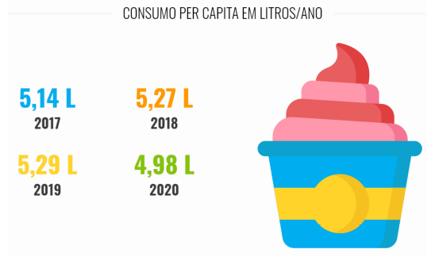
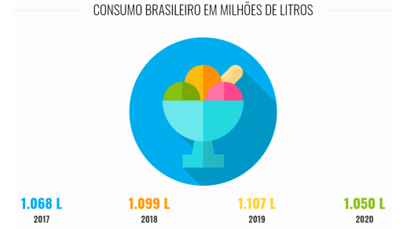

Prosseguindo, apesar do consumo per capita anual ter mantido um crescente aumento de 2017 até o ano 2019, é possível observar que sofreu uma queda em 2020. Entretanto, a despeito das divergências, a porcentagem tende a ser estável para os próximos anos com novas categorias de chup-chup com carácter cada vez mais nutritivo, fazendo bem para a saúde.
Por fim, pode-se afirmar que a tendência foi crescente até o ano de 2019 e em 2020 houve uma queda. Entretanto, devido a diversidade de sabores e fórmulas que se expandem ao passar dos anos, além do caráter nutritivo beneficiando a saúde e outros fatores que continuam sendo criados e remodelados para atender novos tipos de clientes e manter aqueles que já se encontram nesse grupo, esse cenário tende a ficar mais estável e se tornar crescente, além de modificar o antigo pensamento que chup-chup é apenas uma sobremesa doce, pois sendo fabricado da maneira correta, pode ser extremamente positivo para o bem-estar humano, da mesma maneira que as frutas também colaboram positivamente.
Segundo Ferreira (2000), nicho de mercado refere-se a um grupo reduzido de compradores, podendo ser detectado quando um segmento é dividido em subsegmentos específicos. Desta forma, os nichos de mercado possibilitam que as organizações obtenham um conhecimento aprofundado das necessidades do seu público-alvo para que assim, seja possível atender às suas expectativas de forma devida, conforme esperam. Conforme expressado, a Taninha Gourmet realizou uma pesquisa aprofundada através de ferramentas de pesquisa de mercado, a fim de identificar quais são os seus clientes e assim definir seu respectivo nicho.